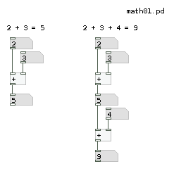
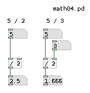
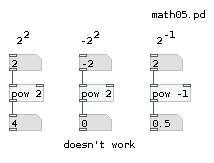
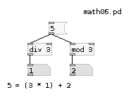
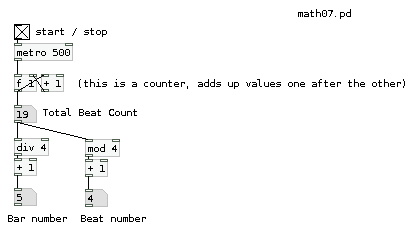
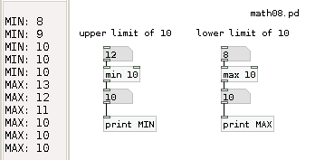
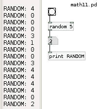
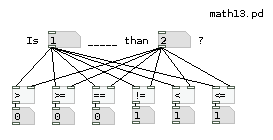

Math
In order to work your data, using mathematical functions is essential to produce something in Pd. Numerical values can be mathematically manipulated with numerous arithmetic objects. These are divided into sections, according to their function:
[+] [-] [*] [/] [pow] simple arithmetic [sqrt] [log] [exp] [abs] higher math [sin] [cos] [tan] [atan] [atan2] trigonometry [mod] [div] fraction work [max] [min] [clip] [moses] numbers and ranges [random] lower math [==] [!=] [>] [<] [>=] [<=] relational operators [mtof] [ftom] [powtodb] [rmstodb] [dbtopow] [dbtorms] convert acoustical units [&] [&&] [|] [||] [%] bit twiddling
Simple arithmetic
This section deals with basic mathematical functions:
- [+] - plus
- [-] - minus
- [*] - multiply
- [/] - divide
- [pow] - power
Each math object does one operation only, taking usually two parameters for it. For example, if you want to sum 2 + 3 + 4, you need to create the necessary objects in a chain - because in reality you are doing two operations.

Don't forget that Pd differentiates between left inlets - the hot inlets - and other inlets - the cold inlets. So if you want to make your operation sucessfully, you must first get the right number in, and only afterwards the left number.

So, if you have an operation where you know that one of the numbers is going to be stable, you should connect that number to a cold inlet - in case the numbers can be changed and the operation still makes sense, of course.

Or you can use the second number as a parameter of your object. In case you don't have any parameter it's like having 0 as a parameter (which was what happened in the previous examples). In case you put in a new number, the second parameter will be actualized.

I guess it isn't necessary to explain how [+], [-], [*] and [/] work. But for the other objects some words will be necessary. [pow] is a basic exponentiation operation, but with some perks to it. First, you can't input any negative base numbers (the left input). And second, you can use negative exponents (right input).

Higher math
Here are introduced some objects that are often used in mathematics:
- [sqrt] to take the square root of a number (no negative numbers allowed)
- [abs] for the absolute value of a number (turns negative numbers into positive numbers)
- [log] and [exp] are the normal functions already known in math
Trigonometry
The objects here relate mainly to trigonometry, and they work the same way already explained for the previous objects. In case you need any information about trigonometry, we suggest to look for a more specific manual. Only one detail: there is no symbolic definition of Pi, so in case you need it, you'll have to type the numeric value as precise as necessary.
Fraction work
With [mod] and [div] you can notice if a fraction produces a remainder and what that remainder is. [div] gives the result of a division without any decimal numbers. [mod] does the opposite, produces the remainder of a division. Note that these objects only work with integer numbers.

Although the explanation before might seem to be a bit dry, these objects are quite useful if you want to build a step sequencer. Combining [div] and [mod] you can control higher group orders of numbers, creating bars and beats. For example:

In this patch [div 4] divides the total beat count by 4 without any remainder, producing the bar number. [mod 4] shows only the remainder of the same division, which in turn is the beat number. Note that the original results vary between 0 and 3 - but it makes more sense to us to see numbers between 1 and 4, so we add 1 to them.
Numbers and ranges
It can be important to know how to make number streams fit certain ranges. For that there are several choices around. The most simple operations imply limiting a range on the upper or lower side. For that you can use [min] or [max], respectively.

Of course, you can change the parameter at any time, by sending a new value to the right side input. Note also that these objects output a number even if the output doesn't change.
[clip] acts as a mixture of both [max] and [min]. You just define the range boundaries.

Another much used object is [moses]. This one doesn't limits the range, but distributes it through it's outlets - a bit like we already saw with [route]. For example, if we wanted to divide between positive and negative numbers, we would have to use only [moses 0]:

This can be quite useful to distribute numbers around several inputs - imagine you have an instrument which plays midi notes up to 60, and another for the higher tones...
Random numbers
Random numbers are quite important in electronic music. Whenever you want to add some imprevisibility to your patches, you'll need someone else to make decisions for you. For that you can use objects like [random] or [shuffle] to generate numbers for you according to certain rules. These numbers are never completely random, as there is always a certain logic to how they work. But they do feel random, as the repetition pattern is too large for a human to grasp.
[random] is Pd's standard integer generator. What is makes is that if produces a "random" number between 0 and X-1, being X the generation parameter you give to the object (or feed it on the right side). Each time [random] gets banged, it produces any number in range. Here is a sequence of random numbers with [random]:

A quite similar object is [shuffle], a Pd-Extended object. It works on the same way (except that you define the range yourself), but with one big difference: it keeps the numbers in memory, so that no number is repeated until the whole sequence has been gone through. This can make a big difference, for example, if you're playing back random samples, and want them to repeat more or less often. These are two nuber sequences where all possible numbers have been generated.

Relational operators
At some point while programming you'll need to compare values to judge situations. Pd offers the normal logical operations that you surealy already know. These objects produce an answer in binay form: 1 for yes and 0 for no.

Conversion between acoustical units
Another set of very useful objects is the next group, which makes conversions between the realms of acoustics. Of course it would be possible to program these objects yourself, as long as you know the formula. But since they're quite used, it makes much more sense to have them around ready to use.
[mtof] transposes from midi pitch into frequency in Hertz. A good reference point is the central C at 60, or the 440Hz central A at 69 - after that add or subtract 12 (semitones) for each octave. Obviously, [ftom] does the inverse operation. By the way, you can also use float numbers - which would produce a microtonal scale.

[dbtorms] converts from decibels to linear RMS amplitude, so that 100 dB corresponds to an RMS of 1 Zero amplitude. [rmstodb] takes over the inverse operation.

And [dbtopow] converts from decibels to power units, that is, the square of the RMS scale.

Bit twiddling
aa
Expr
aa
Audio math
aa